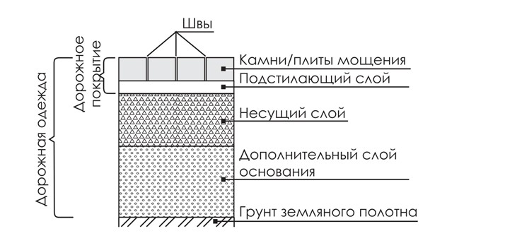
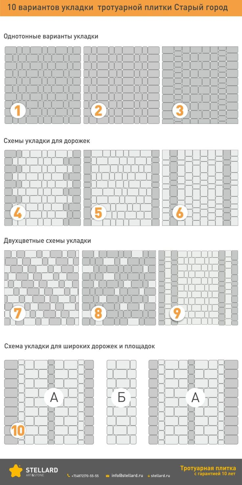
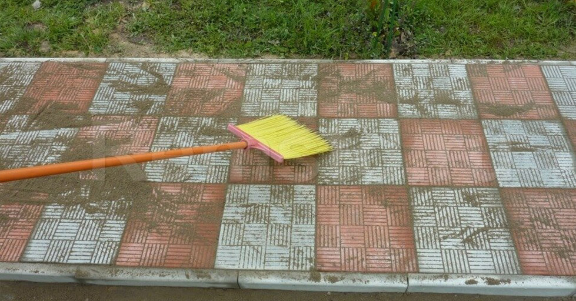

Ошибка 1: Экономия на толщине основания
Что делают: вместо положенных 20–30 см щебня и песка насыпают 10–15 см, чтобы сэкономить 500–1 000 ₽ на материалах.
Что происходит: после первой зимы плитка проседает, появляются лужи, бордюры «уходят» в сторону. Грунт под нагрузкой даёт усадку — тонкое основание не выдерживает веса автомобиля.
Как правильно:
- Пешеходные дорожки: минимум 15 см щебня + 10 см песка.
- Парковки: 20 см щебня + 15 см песка + опционально 10 см бетона.
- Обязательно утрамбовывать каждый слой!
Ошибка 2: Отсутствие уклона для водоотвода
Что делают: укладывают плитку строго горизонтально «чтобы было ровно».
Что происходит: после дождя или таяния снега вода стоит лужами. Зимой лужи замерзают, весной вода проникает в швы и размывает основание.
Как правильно:
- Уклон 1–2 см на 1 метр длины (1–2%).
- Направление: от дома к газону или в ливнёвку.
- Большая площадка — несколько уклонов к точкам сбора воды.

Ошибка 3: Укладка на глинистый грунт без дренажа
Что делают: снимают траву и укладывают плитку прямо на глину, чтобы не тратиться на щебень.
Что происходит: глина — пучинистый грунт. Зимой она замерзает и увеличивается в объёме, поднимая плитку; весной оттаивает и «плывёт».
Как правильно:
- Снимите глинистый грунт на глубину 30–40 см.
- Засыпьте щебень (он не пучится).
- Проложите геотекстиль (рекомендуется).
- Только потом песок и плитка.
Ошибка 4: Отсутствие бордюров или их неправильная установка
Что делают: вариант А — вообще не ставят бордюры; вариант Б — ставят «на глаз» без бетонирования.
Что происходит: плитка «расползается» в стороны. Через год-два между плитками появляются щели 2–5 см, рисунок нарушается.
Как правильно:
- Бордюры обязательны по всему периметру — до укладки плитки.
- Траншея: глубина 15–20 см; фиксация бетонным раствором с двух сторон.
- Дайте бетону схватиться минимум 2–3 часа (лучше сутки).

Ошибка 5: Неправильное заполнение швов
Что делают: вариант А — вообще не заполняют; вариант Б — засыпают землёй или травой; вариант В — бетонный раствор вместо ЦПС.
Что происходит: без заполнения плитка «играет»; с землёй в швах растёт трава; с бетоном плитка трескается при температурном расширении.
Как правильно: сухая цементно-песчаная смесь (1:3) или кварцевый песок; промести щёткой, пролейте водой, повторите 2–3 раза.

Бонус: Ошибка 6 — укладка в неподходящее время
Что делают: укладывают зимой при отрицательной температуре, в дождь или в сильную жару (+30 °C и выше).
Что происходит: зимой ЦПС не схватывается; в дождь вода размывает песок и щебень; в жару влага слишком быстро испаряется.
Как избежать всех этих ошибок?
- Вариант 1: делать самому, но тщательно изучить технологию (эта статья — хороший старт).
- Вариант 2: нанять профессиональную бригаду с гарантией.
- Вариант 3 (лучший): заказать «плитку + укладку» на заводе «ТверьКамень».
- Производим плитку сами — знаем все её особенности.
- Свои бригады с опытом от 5 лет.
- Гарантия 5 лет на материалы и работы.
- Фиксируем цену в договоре — никаких доплат.
- Если что-то пойдёт не так — исправим за свой счёт.
Бесплатная консультация и выезд на замер
При заказе до конца месяца — скидка 10% на укладку. Позвоните, чтобы забронировать бригаду и зафиксировать цену.
Позвонить: +7 (900) 000-00-00